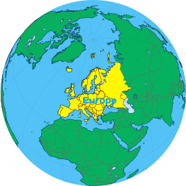
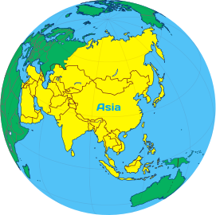
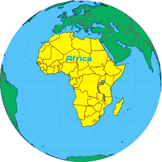
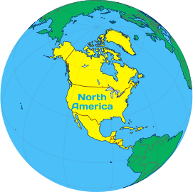
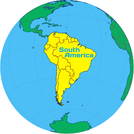
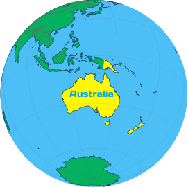

Кухня континентів
Континентальна кухня
На нашій величезній та багатій планеті Землі історично склалося так, що вона поділена на різні ділянки – континенти. Кожна з них має свої унікальні особливості, традиції харчування, вирощування продуктів і розведення худоби та птахів. Однак, є один із континентів, який не придатний ні для вирощування продуктів харчування, ні для розведення худоби, ні для розвитку культури харчування в цілому.
Цим континентом є Антарктида, що асоціюється з вічною мерзлотою. Через особливості географічного положення та клімату на Антарктиді неможливо насолоджуватися процесами приготування та створення кулінарних шедеврів. Основним способом харчування на Антарктиді є імпорт різних консервів та заморожених напівфабрикатів. У той час як інші шість континентів мають багату історію кулінарії, унікальні традиції вживання та приготування їжі. Давайте розглянемо кожен з них більш детально, адже кожен куточок нашого прекрасного світу заслуговує на увагу і робить свій внесок в історію кулінарії світової спільноти.
- 
Європа
- Велике розмаїття кухонь у різних країнах Європи: французька, італійська, іспанська, грецька, німецька та багато інших.
- Використання м'яса: яловичина, свинина, ягнятина та птиці, споживання молочних продуктів, як важливого джерела білка та кальцію.
- Використання оливок, оливкової олії, винограду, хліба та пшениці.
- 
Азія
- Різноманітність азійської кухні: китайська, індійська, японська, тайська, корейська, в'єтнамська.
- Використання рису, сої, риби, морепродуктів, використання різних спецій: куркума, карі, імбир, лемонграс та інших традиційних інгредієнтів.
- Різноманіття кулінарних технік, таких як варіння, смаження, парення та ферментація.
- 
Африка
- Використання м'яса, такого як коза, баран, крокодил, зебра та інші види диких тварин.
- Розповсюджені страви: кускус, джолоф-рис, боботі, брааї (східноафриканські шашлики).
- Багатство тропічних фруктів і овочів, зокрема банани, манго, папая, айлантус, кокоси.
- Вживання багато спецій, таких як карі та харіса.
- 
Північна Америка
- Високе споживання м'яса: говядини, свинини та птиці, а також морепродуктів: лобстерів, креветок та мідій.
- Використання пшениці для виготовлення хліба, пасти та інших хлібобулочних виробів.
- Традиційні страви: гамбургери, хот-доги, стейки, мексиканська кухня (такос і бурріто), морепродукти (лобстери, мідії, креветки).
- 
Південна Америка
- Збагачена різноманітністю продуктів, включаючи картоплю, кукурудзу, фасоль, гарбуз, м'ясо, рибу та тропічні фрукти.
- Використання традиційних інгредієнтів: кіноа, алевро, квінталес
- Традиційні страви: арроз кон польо (м'ясо з рисом), асадо (парильне м'ясо), гвакамоле, емпанадас (насичені пиріжки).
- 
Австралія(Океанія)
- Значна кількість м'яса, зокрема ягнятина, яловичина, кенгуру та риба з Тихого океану, які використовують в австралійській кухні.
- Популярні страви: барбекю, ламб чопс, кенгуру-бургери, морські продукти.
- Вживання багато тропічних фруктів, які ростуть в цьому регіоні.
Контактна інформація
Зворотній звʼязок
gastroguide@ukr.net